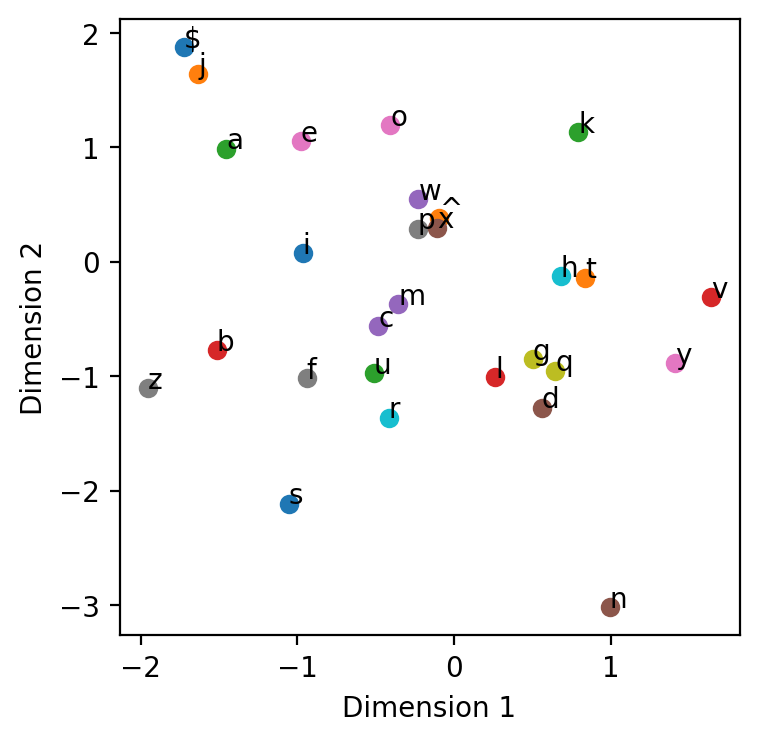

import numpy as np
import matplotlib.pyplot as plt
%matplotlib inline
%config InlineBackend.figure_format = 'retina'
import torch
import torch.nn as nn
import torch.nn.functional as F
from einops import rearrange, reduce, repeat—author: Nipun Batrabadges: truecategories:- MLdate: ’2024-05-30’title: Character-Level RNN for Name Generationtoc: true—
!wget https://raw.githubusercontent.com/MASTREX/List-of-Indian-Names/master/2.%20First.txt -O names-indian.txt--2024-05-30 09:41:48-- https://raw.githubusercontent.com/MASTREX/List-of-Indian-Names/master/2.%20First.txt
Resolving raw.githubusercontent.com (raw.githubusercontent.com)... 185.199.111.133, 185.199.110.133, 185.199.108.133, ...
Connecting to raw.githubusercontent.com (raw.githubusercontent.com)|185.199.111.133|:443... connected.
HTTP request sent, awaiting response... 200 OK
Length: 8752 (8.5K) [text/plain]
Saving to: ‘names-indian.txt’
names-indian.txt 100%[===================>] 8.55K --.-KB/s in 0s
2024-05-30 09:41:49 (33.8 MB/s) - ‘names-indian.txt’ saved [8752/8752]
import pandas as pd
pd.read_csv('names-indian.txt', header=None)| 0 | |
|---|---|
| 0 | Abhishek |
| 1 | Aman |
| 2 | Harsh |
| 3 | Ayush |
| 4 | Aditi |
| ... | ... |
| 1160 | Prasoon |
| 1161 | Madhusudan |
| 1162 | Prastuti |
| 1163 | Rampratap |
| 1164 | Madhukar |
1165 rows × 1 columns
# convert all names to lowercase
names = pd.read_csv('names-indian.txt', header=None)[0].str.lower().valuesnamesarray(['abhishek', 'aman', 'harsh', ..., 'prastuti', 'rampratap',
'madhukar'], dtype=object)# KDE plot of name lengths
plt.figure(figsize=(8, 4))
plt.hist([len(name) for name in names], bins=range(1, 20), density=True, alpha=0.7)
plt.xlabel('Name length')
plt.ylabel('Density')Text(0, 0.5, 'Density')
# Attach START and END tokens to each name. Need to add these two to the vocabulary.
start_symbol = '^'
end_symbol = '$'
names = [start_symbol + name + end_symbol for name in names]
names[:5]['^abhishek$', '^aman$', '^harsh$', '^ayush$', '^aditi$']# Find unique characters in the dataset
vocab = set(''.join(names))
vocab = sorted(vocab)
print(vocab, len(vocab))['$', '^', 'a', 'b', 'c', 'd', 'e', 'f', 'g', 'h', 'i', 'j', 'k', 'l', 'm', 'n', 'o', 'p', 'q', 'r', 's', 't', 'u', 'v', 'w', 'x', 'y', 'z'] 28# Create a d dimensional lookup table for each character in the vocabulary
class CharTable:
def __init__(self, vocab):
self.vocab = vocab
self.char2index = {c: i for i, c in enumerate(vocab)}
self.index2char = {i: c for i, c in enumerate(vocab)}
self.vocab_size = len(vocab)
def encode(self, name):
return torch.tensor([self.char2index[c] for c in name])
def decode(self, tensor):
if type(tensor) == torch.Tensor:
tensor = tensor.cpu().numpy()
return ''.join([self.index2char[i] for i in tensor])ct = CharTable(vocab)ct.encode('^'), ct.encode('$'), ct.encode('a'), ct.encode('z'), ct.encode('ab'), ct.encode('za')(tensor([1]),
tensor([0]),
tensor([2]),
tensor([27]),
tensor([2, 3]),
tensor([27, 2]))ct.decode([1]), ct.decode(torch.tensor([1])), ct.decode(torch.tensor([1, 2, 3]))('^', '^', '^ab')# create embedding layer
class CharEmbedding(nn.Module):
def __init__(self, vocab_size, embed_size):
super(CharEmbedding, self).__init__()
self.embedding = nn.Embedding(vocab_size, embed_size)
def forward(self, x):
return self.embedding(x)char_embedding = CharEmbedding(ct.vocab_size, 2)def plot_2d_embeddings(embedding, vocab):
plt.figure(figsize=(4, 4))
for i, char in enumerate(vocab):
tensor = ct.encode(char)
embedding = char_embedding(tensor)
plt.scatter(embedding[0, 0].item(), embedding[0, 1].item())
plt.text(embedding[0, 0].item(), embedding[0, 1].item(), char)
plt.xlabel('Dimension 1')
plt.ylabel('Dimension 2')
plot_2d_embeddings(char_embedding, vocab)
import torch.nn.functional as F
class RNN(nn.Module):
def __init__(self, input_size, hidden_size, output_size):
super(RNN, self).__init__()
self.hidden_size = hidden_size
self.i2h = nn.Linear(input_size, hidden_size)
self.h2h = nn.Linear(hidden_size, hidden_size)
self.h2o = nn.Linear(hidden_size, output_size)
self.softmax = nn.LogSoftmax(dim=1)
def forward(self, input, hidden):
hidden = F.tanh(self.i2h(input) + self.h2h(hidden))
output = self.h2o(hidden)
output = self.softmax(output)
return output, hidden
def init_hidden(self):
return torch.zeros(1, self.hidden_size)rnn = RNN(2, 128, ct.vocab_size)# Predict the next character given the current character
current_char = "a"
print("Current character:", current_char)
# convert to tensor
current_tensor = ct.encode(current_char)
print("Curent tensor:", current_tensor)
# Look up the embedding
current_embedding = char_embedding(current_tensor)
print("Current embedding:", current_embedding)
# Initialize the hidden state
hidden = rnn.init_hidden()
#print(hidden)
# Pass the embedding and hidden state through the RNN
output, hidden = rnn(current_embedding, hidden)
print(output)
# Print the predicted character (most probable)
_, predicted_index = output.topk(1)
# flatten the tensor
predicted_index = predicted_index.squeeze().item()
# convert to character
predicted_char = ct.decode([predicted_index])
print("Predicted character:", predicted_char)Current character: a
Curent tensor: tensor([2])
Current embedding: tensor([[-1.4545, 0.9880]], grad_fn=<EmbeddingBackward0>)
tensor([[-2.5902, -3.3533, -3.8653, -3.9548, -3.5940, -2.8801, -3.4821, -3.0470,
-3.5943, -3.5595, -3.6062, -3.5047, -3.6877, -3.3012, -3.7079, -4.4289,
-2.9308, -3.6200, -3.3797, -3.7172, -2.8883, -2.6247, -3.7265, -3.3239,
-3.7247, -2.9247, -3.4027, -3.2497]], grad_fn=<LogSoftmaxBackward0>)
Predicted character: $# Create a function to generate a word (sequence of characters) given a
# starting sequence of characters (stops when END token is predicted)
# or if the length of the generated word exceeds a certain limit of 10 characters
def create_name(start_string, rnn, char_embedding, ct):
with torch.no_grad():
# start with the last character in the start_string
current_char = start_string[-1]
current_tensor = ct.encode(current_char)
current_embedding = char_embedding(current_tensor)
hidden = rnn.init_hidden()
name = start_string
while current_char != end_symbol and len(name) < 10:
output, hidden = rnn(current_embedding, hidden)
# Find the next character by sampling from the output distribution
predicted_index = torch.multinomial(torch.exp(output), 1).item()
current_char = ct.decode([predicted_index])
_, predicted_index = output.topk(1)
predicted_index = predicted_index.squeeze().item()
current_char = ct.decode([predicted_index])
name += current_char
current_tensor = ct.encode(current_char)
current_embedding = char_embedding(current_tensor)
return name
create_name('^a', rnn, char_embedding, ct)'^anm$'create_name('^c', rnn, char_embedding, ct)'^c$'# Generate dataset for training
def generate_data(names, ct):
X = []
Y = []
for name in names:
for i in range(1, len(name)):
X.append(name[i-1])
Y.append(name[i])
X = [ct.encode(x) for x in X]
Y = [ct.encode(y) for y in Y]
return X, Y
X, Y = generate_data(names, ct)X[0], Y[0], X[1], Y[1], X[2], Y[2](tensor([1]), tensor([2]))print(names[0])
print(ct.decode(X[0]), ct.decode(Y[0]))
print(ct.decode(X[1]), ct.decode(Y[1]))
print(ct.decode(X[2]), ct.decode(Y[2]))^abhishek$
^ a
a b
b h# Training loop
num_epochs = 12
learning_rate = 3e-4
embedding_size = 8
hidden_size = 32
rnn = RNN(embedding_size, hidden_size, ct.vocab_size)
embedding = CharEmbedding(ct.vocab_size, embedding_size)
optimizer = torch.optim.Adam(list(rnn.parameters()) + list(embedding.parameters()), lr=learning_rate)
criterion = nn.NLLLoss()
for epoch in range(num_epochs):
total_loss = 0
for i in range(len(X)):
optimizer.zero_grad()
hidden = rnn.init_hidden()
input_tensor = X[i]
target_tensor = Y[i].squeeze()
input_embedding = embedding(input_tensor)
target_tensor = target_tensor.unsqueeze(0)
output, hidden = rnn(input_embedding, hidden)
predicted_next_char = output.argmax().item()
loss = criterion(output, target_tensor)
loss.backward()
optimizer.step()
total_loss += loss.item()
#print(i, loss.item())
if (epoch+1) % 1 == 0:
print(f'Epoch: {epoch+1}/{num_epochs}, Loss: {total_loss/len(X)}')Epoch: 1/12, Loss: 2.684675631081001
Epoch: 2/12, Loss: 2.4274482760898484
Epoch: 3/12, Loss: 2.3604175581492934
Epoch: 4/12, Loss: 2.3314669918697972
Epoch: 5/12, Loss: 2.3155676853116023
Epoch: 6/12, Loss: 2.3054449003057
Epoch: 7/12, Loss: 2.2983417296262845
Epoch: 8/12, Loss: 2.2929774504282614
Epoch: 9/12, Loss: 2.2887099773854604
Epoch: 10/12, Loss: 2.2851798680263626
Epoch: 11/12, Loss: 2.2821793051528485
Epoch: 12/12, Loss: 2.2795761335450453plot_2d_embeddings(embedding, vocab)create_name('^a', rnn, embedding, ct)'^an$'create_name('^b', rnn, embedding, ct)'^bhan$'create_name('^c', rnn, embedding, ct)'^chan$'create_name('^d', rnn, embedding, ct)'^dan$'create_name('^n', rnn, embedding, ct)'^n$'